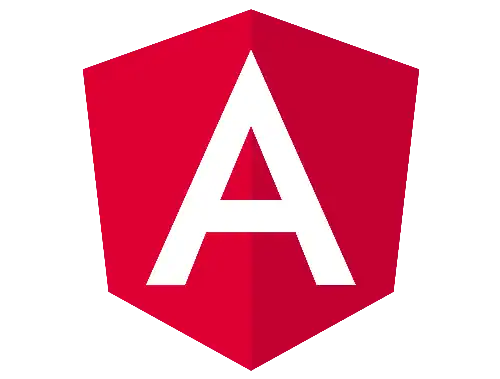
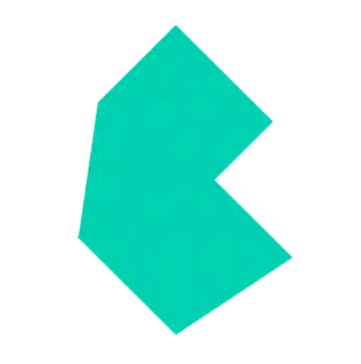

<!DOCTYPE html>
<html lang="es">

<head>
    <meta charset="UTF-8">
    <meta name="viewport" content="width=device-width, initial-scale=1.0">
    <script src="https://cdn.tailwindcss.com"></script>
    <link rel="preconnect" href="https://fonts.googleapis.com" />
    <link rel="preconnect" href="https://fonts.gstatic.com" crossorigin />
    <link href="https://fonts.googleapis.com/css2?family=DM+Serif+Display&display=swap" rel="stylesheet" />
    <script src="https://kit.fontawesome.com/bf7e2ba98b.js" crossorigin="anonymous"></script>
    <link rel="stylesheet" href="./styles.css">
    <title>Frameworks Front-End</title>
</head>

<body>
</body>

<!-- BAJO EL BODY, YA CON EL DOM CARGADO, RELLENAMOS CON EL CONTENIDO DESEADO MEDIANTE EL MÉTODO INNERHTML -->
<script>
    // guardo el contenido de header en una variable
    const header = document.createElement("header");
    header.innerHTML = `
        <div class="header">
            <button class="boton-mostrar-menu">
                <i class="fa-solid fa-bars text-4xl"></i>
            </button>
            <div class="menu">
                <span class="-mt-28 md:-mt-52 lg:-mt-0 hover:text-gray-600" id="temaClaro">
                    CLARO
                </span>
                <span id="recargar"></img></span>
                <span id="temaOscuro" class="hover:text-gray-600">OSCURO</span>
            </div>
        </div>
    `;

    // guardo el contenido de main en una variable
    const main = document.createElement("main");
    main.innerHTML = `
        <div class="contenedor-principal">
            <div class="carousel-fondo">
                <div class="h-screen flex flex-col justify-evenly -mt-8">
                    <section class="w-full overflow-hidden">
                        <article class="article1">
                            <div class="flex">
                                <div class="flex items-center justify-center ancho">
                                    
                                </div>
                                <div class="flex items-center justify-center ancho">
                                    
                                </div>
                                <div class="flex items-center justify-center ancho">
                                    
                                </div>
                                <div class="flex items-center justify-center ancho">
                                    
                                </div>
                            </div>
                            <div class="flex">
                                <div class="flex items-center justify-center ancho">
                                    
                                </div>
                                <div class="flex items-center justify-center ancho">
                                    
                                </div>
                                <div class="flex items-center justify-center ancho">
                                    
                                </div>
                                <div class="flex items-center justify-center ancho">
                                    
                                </div>
                            </div>
                        </article>
                    </section>

                    <section class="w-full overflow-hidden">
                        <article class="article2">
                            <div class="flex">
                                <div class="flex items-center justify-center ancho">
                                    
                                </div>
                                <div class="flex items-center justify-center ancho">
                                    
                                </div>
                                <div class="flex items-center justify-center ancho">
                                    
                                </div>
                                <div class="flex items-center justify-center ancho">
                                    
                                </div>
                            </div>
                            <div class="flex">
                                <div class="flex items-center justify-center ancho">
                                    
                                </div>
                                <div class="flex items-center justify-center ancho">
                                    
                                </div>
                                <div class="flex items-center justify-center ancho">
                                    
                                </div>
                                <div class="flex items-center justify-center ancho">
                                    
                                </div>
                            </div>
                        </article>
                    </section>
                </div>
            </div>
            <div class="contenedor-secundario">
                <div class="contenedor-scroll">
                    <h1 class="text-2xl negro font-bold">Exploración de Frameworks Front-end</h1>
                    <br />
                    <h3 class="negro">
                        En esta guía vamos a sumergirnos en algunos de los frameworks de front-end más utilizados,
                        destacando sus orígenes,
                        características clave y relevancia en la actualidad para ayudarte a comprender mejor cómo pueden
                        beneficiar tus proyectos de desarrollo web.
                    </h3>

                    <br />
                    <h5 class="negro text-xl">React</h5>
                    <br />
                    <p>
                        interfaces de usuario en la web. Este framework, basado en el concepto de componentes
                        React, creado por Facebook en 2013, ha revolucionado la forma en que se construyen las
                        resulta en una experiencia de usuario más fluida y eficiente.
                        reutilizables, utiliza un virtual DOM para optimizar las actualizaciones del DOM real, lo que
                    </p>
                    <br />
                    <p>
                        React se ha convertido en una opción popular entre los desarrolladores gracias a su flexibilidad
                        y rendimiento excepcional. Su creciente ecosistema de bibliotecas y herramientas, como Redux y
                        React Router, lo convierte en una opción sólida para el desarrollo de aplicaciones web modernas
                        y escalables. Además, la adopción de JSX como su lenguaje de marcado permite a los
                        desarrolladores escribir componentes de manera más intuitiva y eficiente.
                    </p>
                    <br />
                    <div class="div-img">
                        
                    </div>

                    <br />
                    <h5 class="negro text-xl">Angular</h5>
                    <br />
                    <p>
                        Angular, un proyecto de código abierto desarrollado y mantenido por Google, ha ganado una gran
                        popularidad desde su lanzamiento en 2010. Este framework, escrito en TypeScript, se destaca por
                        su enfoque modular y escalable, que facilita la creación de aplicaciones web complejas y de gran
                        envergadura. Angular ofrece una estructura robusta basada en componentes, lo que permite una
                        organización clara y una fácil reutilización de código.
                    </p>
                    <br />
                    <p>
                        Además, su sistema de inyección de dependencias y su capacidad para manejar grandes volúmenes de
                        datos lo hacen especialmente útil para aplicaciones empresariales. Con una comunidad activa y el
                        respaldo de Google, Angular continúa evolucionando y mejorando constantemente, manteniéndose al
                        día con las últimas tendencias y tecnologías en el desarrollo web.
                    </p>
                    <br />
                    <div class="div-img">
                        
                    </div>

                    <br />
                    <h5 class="negro text-xl">Vue</h5>
                    <br />
                    <p>
                        Vue, lanzado por Evan You en 2014, es un framework progresivo de JavaScript utilizado para
                        construir interfaces de usuario interactivas y sofisticadas. Destaca por su facilidad de
                        aprendizaje y su enfoque gradual, lo que significa que puede ser adoptado fácilmente en
                        proyectos existentes.
                    </p>
                    <br />
                    <p>
                        Vue ofrece una sintaxis clara y concisa, lo que facilita la creación de componentes
                        reutilizables y la construcción de aplicaciones modulares. Además, Vue proporciona un
                        rendimiento eficiente gracias a su sistema de reactividad y su capacidad para renderizar
                        componentes de manera eficiente.
                    </p>
                    <br />
                    <div class="div-img">
                        
                    </div>

                    <br />
                    <h5 class="negro text-xl">Svelte</h5>
                    <br />
                    <p>
                        Svelte ha ganado reconocimiento en la comunidad de desarrollo web por su enfoque innovador en la
                        construcción de interfaces de usuario. Este framework, lanzado en 2016, se destaca por su
                        enfoque de compilación en tiempo de compilación, que genera código altamente optimizado y
                        eficiente.
                    </p>
                    <br />
                    <p>
                        A diferencia de otros frameworks que dependen de un virtual DOM, Svelte no genera código
                        intermedio en tiempo de ejecución, lo que resulta en un paquete final más pequeño y un
                        rendimiento excepcionalmente rápido. Esta característica lo hace especialmente adecuado para
                        aplicaciones que requieren una alta velocidad de carga y una experiencia de usuario fluida.
                        Además, Svelte ofrece una sintaxis sencilla y fácil de entender, lo que facilita su aprendizaje
                        y adopción por parte de los desarrolladores.
                    </p>
                    <br />
                    <div class="div-img">
                        
                    </div>

                    <br />
                    <h5 class="negro text-xl">Bulma</h5>
                    <br />
                    <p>
                        Bulma es un framework CSS moderno y flexible desarrollado por Jeremy Thomas en 2016. Se
                        caracteriza por su diseño modular y su enfoque basado en clases, que facilita la creación de
                        interfaces de usuario elegantes y responsivas. Bulma ofrece una amplia gama de componentes
                        prediseñados y utilidades CSS que permiten a los desarrolladores construir sitios web de manera
                        rápida y eficiente.
                    </p>
                    <br />
                    <p>
                        Además, Bulma es altamente personalizable y extensible, lo que permite a los desarrolladores
                        adaptarlo fácilmente a sus necesidades específicas. Con una comunidad activa y una documentación
                        detallada, Bulma se ha convertido en una opción popular entre los desarrolladores que buscan una
                        alternativa ligera y flexible a otros frameworks CSS más pesados.
                    </p>
                    <br />
                    <div class="div-img">
                        
                    </div>

                    <br />
                    <h5 class="negro text-xl">Foundation</h5>
                    <br />
                    <p>
                        Foundation, desarrollado por ZURB en 2011, es un conjunto de herramientas y estilos front-end
                        que proporciona una base sólida para el diseño responsivo y la creación de interfaces de usuario
                        atractivas. Este framework ofrece una amplia variedad de componentes y utilidades CSS que
                        facilitan el desarrollo de sitios web modernos y adaptables a diferentes dispositivos y tamaños
                        de pantalla.
                    </p>
                    <br />
                    <p>
                        Foundation se destaca por su enfoque centrado en el diseño móvil primero, lo que garantiza una
                        experiencia de usuario óptima en dispositivos móviles y de escritorio. Además, su arquitectura
                        modular permite a los desarrolladores seleccionar y personalizar solo los componentes necesarios
                        para sus proyectos, lo que contribuye a un código más limpio y optimizado.
                    </p>
                    <br />
                    <div class="div-img">
                        
                    </div>

                    <br />
                    <h5 class="negro text-xl">Bootstrap</h5>
                    <br />
                    <p>
                        Bootstrap, desarrollado por Twitter en 2011, es uno de los frameworks CSS más populares y
                        ampliamente utilizados en la actualidad. Este framework se destaca por su facilidad de uso y su
                        extensa colección de componentes y estilos de diseño predefinidos. Bootstrap ofrece una variedad
                        de características que facilitan el desarrollo de sitios web responsivos y visualmente
                        atractivos, como un sistema de rejilla flexible, componentes de interfaz de usuario listos para
                        usar y clases de utilidad CSS.
                    </p>
                    <br />
                    <p>
                        Además, Bootstrap se ha mantenido relevante mediante actualizaciones regulares y la adopción de
                        las últimas tendencias en diseño web, como el diseño plano y la tipografía receptiva. Su
                        documentación exhaustiva y su amplia comunidad de usuarios hacen que sea fácil para los
                        desarrolladores comenzar a trabajar con Bootstrap y personalizarlo según sus necesidades
                        específicas.
                    </p>
                    <br />
                    <div class="div-img">
                        
                    </div>

                    <br />
                    <h5 class="negro text-xl">Tailwind</h5>
                    <br />
                    <p>
                        Tailwind CSS, desarrollado por Adam Wathan, Jonathan Reinink y David Hemphill en 2017, es un
                        framework CSS utilitario que se centra en la construcción de interfaces de usuario
                        personalizadas y de alta calidad.
                    </p>
                    <br />
                    <p>
                        A diferencia de otros frameworks CSS que proporcionan componentes prediseñados, Tailwind CSS se
                        basa en clases utilitarias que se pueden combinar de manera flexible para crear estilos únicos y
                        personalizados. Esto ofrece a los desarrolladores un mayor control sobre el diseño y la
                        apariencia de sus sitios web, sin sacrificar la eficiencia o la legibilidad del código.
                    </p>
                    <br />
                    <p>
                        Con una sintaxis intuitiva y una amplia gama de funcionalidades, Tailwind CSS se ha convertido
                        en una opción popular para aquellos que buscan un enfoque más modular y personalizable para el
                        diseño de sitios web.
                    </p>
                    <br />
                    <div class="div-img">
                        
                    </div>
                </div>
            </div>
        </div>
    `;

    // inserto header y main en contenedor-scroll
    document.body.append(header, main);

    // MOSTRAR / OCULTAR MENU (MOVIL Y TABLET)
    const boton = document.querySelectorAll(".boton-mostrar-menu");

    boton.forEach((button) => {
        button.addEventListener("click", () => {
            const menu = document.querySelector(".menu");
            menu.style.display =
                menu.style.display === "none" || menu.style.display === ""
                    ? "flex"
                    : "none";
        });
    });

    document.querySelector("#temaClaro").addEventListener('click', function () {
        document.body.style.backgroundColor = "rgb(77, 77, 77)";
        document.querySelector(".header").style.backgroundColor = "white";
        document.querySelector(".fa-bars").style.color = "black";
        document.querySelector(".menu").style.background = "rgba(255, 255, 255, 0.904)";
        document.querySelector(".contenedor-scroll").style.backgroundColor = "rgba(255, 255, 255, 0.925)";
        document.querySelector(".contenedor-scroll").style.color = "black";

        document.querySelectorAll("h1, h5, span").forEach(function (elemento) {
            elemento.style.color = "black";
        });

        document.querySelectorAll("h3, p").forEach(function (elemento) {
            elemento.style.color = "rgba(0, 0, 0, 0.733)";
        });
    });

    document.querySelector("#temaOscuro").addEventListener('click', function () {
        document.body.style.backgroundColor = "#D3D3D3";
        document.querySelector(".header").style.backgroundColor = "#1E1E1E";
        document.querySelector(".fa-bars").style.color = "#D3D3D3";
        document.querySelector(".menu").style.background = "rgba(29, 29, 29, 0.950)";
        document.querySelector(".contenedor-scroll").style.backgroundColor = "rgba(29, 29, 29, 0.950)";
        document.querySelector(".contenedor-scroll").style.color = "#1E1E1E";

        document.querySelectorAll("h1, h5, span").forEach(function (elemento) {
            elemento.style.color = "white";
        });

        document.querySelectorAll("h3, p").forEach(function (elemento) {
            elemento.style.color = "#D3D3D3";
        });
    });

    document.querySelector("#recargar").addEventListener('click', function () {
        location.reload();
    });
</script>

</html>